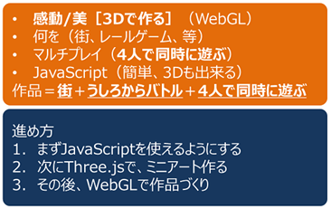

メンター勉強会（2021-09-18）
Scratch以外のプログラム言語を習得したい
いつもは小学生と共通のScratchばかりだけど、若手メンターが参加しているので実際に使えるアプリを開発しようということになった。しかーし、プログラム言語を覚えるのではつまらないし、すぐ飽きる。そこで、ずーっと使える実用的なアプリをみんなで開発したいねーという妄想を描くことにした。
履歴：
- 2021/09/18. ゴール定義：何かすごいアプリを作る。でも、それって何？
- 2021/mm/dd. 次回
ゴール定義：何かすごいアプリを作る。でも、それって何？
集まったメンターは6名。何を作りたいか、みんなで考えた。WEBアプリかゲームかな、実際に使えるものがいいかな。まずは「ブレインストーミング」で３要素を書き出し。３Ｄゲームもいいけど、感動を与えたい３Ｄグラフィックスもいい。ニンテンドーの「うしろからバトル」がマルチプレイｘ３Ｄで楽しそう。プログラム言語はUnityが人気多勢か。しかし覚えること多過ぎて大変だぞ。WebGL？なにソレ？Three.jsってのが良さげ？いいの教えてくれた。

そして「やりたいコト見つけるメソッド」で、３つの要素が重なりあう中心を考える。
導いたやりたいコトとは？ そしてその進め方は？
